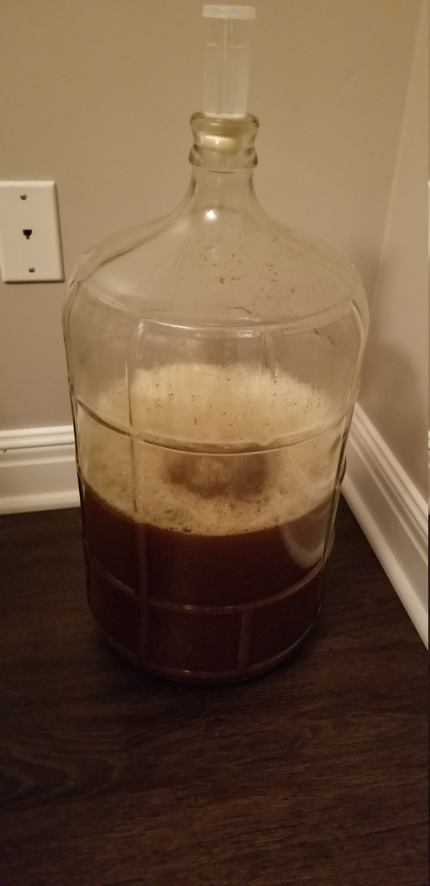
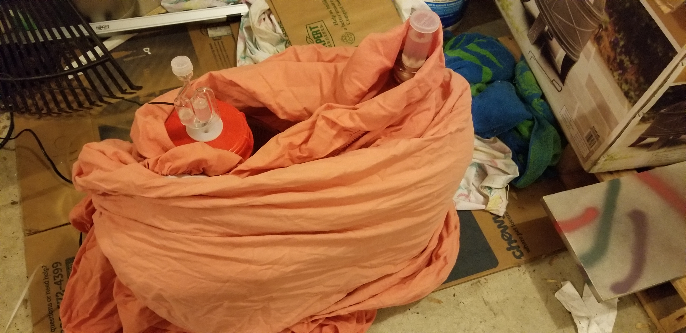
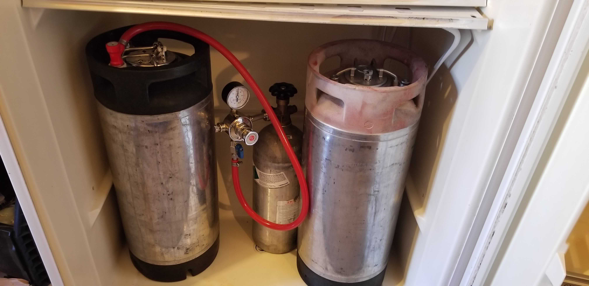
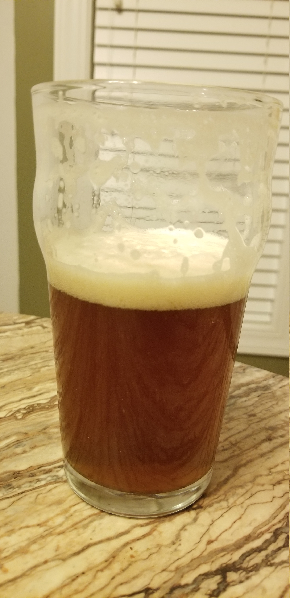

My first attempt at a pumpkin beer, this is a recipe from Frank Clark and Beer & Brewing. Clark is a food historian, and this recipe is what he thought might be an example of a colonial style pumpkin beer with a few tweaks thrown in to match more modern expectations. These didn’t typically include much in the way of spices, and pumpkin was supposedly used since barley was an expensive import item.
I’m swapping in 2-row barley for the 6 due to availability. This will result in a slightly higher yield than the original recipe, but not significantly so.
General Information
| Batch Size | 3 Gal |
| Batch Type | All Grain |
| Expected OG | 37 |
| Actual OG | 42 |
| Expected FG | 10 |
| Actual FG | 16 |
| ABV | 3.15% |
| IBU | 20 |
| Mash | Single Infusion, 60 min, 152°F |
| Boil | 60 min |
Ingredients
Per gallon
| Amount | Ingredient |
|---|---|
| 3.3 lb | Pre-Baked, Fresh Pumpkin |
| ⅔ lb | Pale 2-Row |
| ⅔ lb | White Wheat Malt |
| ⅒ lb | Molasses |
| Hops | |
| 0.17 oz | Kent Goldings Pellet 5% AA |
| Yeast | |
| 1 packet | SafAle S-04 |
| Other | |
| ½ tab | Whirlflocc |
Mash
| Type | Single Infusion |
| Sparge | Batch |
| Water/Grist | 1.25 qt/lb |
| Target pH | 5.39 |
| Target Mash Temp | 152°F |
| Grain Temp | 68°F |
| Strike Water Temp | 163°F |
| Actual Mash Temp | 154°F |
Strike Water Profile
| Ca+2 | Mg+2 | Na+ | Cl- | SO4-2 | Alkalinity | Residual Alkalinity |
|---|---|---|---|---|---|---|
| 20.0 | 2.7 | 46.0 | 78.0 | 100.0 | 2.5 | -13.4 |
| Boil Time | Amount | Type |
|---|---|---|
| 60 Min | ⅓ oz (All) | Kent Goldings |
| 5 min | ½ tab | Whirlflocc |
| 0 min | ⅒ lb (All) | Molasses |
This boil didn’t go exactly as planned - I was wrapping up this year’s Thanksgiving Winter Warmer and didn’t notice how much was being boiled off. Probably lost about an extra third of a gallon - not a big deal, but this is a bit higher gravity than intended.
Fermentation
This was fermented at between 63-67°F. The yeast was rehydrated in 4oz of water for 30 minutes and pitched in the wort at ~74°F to encourage a vigarous start. I’m not terribly concerned about temperature control on this beer since it is intended to have some old roots - colonial brewers didn’t exactly have the benefit of tight temperature controls.
 
Turns out that my dining room is just a little too warm for my target fermentation temperature. Instead I’m using my garage with a ferm wrap and a blanket to hit my desired temperature. On the right in the sheet is the Thanksgiving Winter Warmer.
Kegging day update I noticed after removing the sheet from around the carboy on keg day that the beer had two leaves from the outdoor boil still floating around. Just going to call it a colonial touch.
Carbonation
Carbonation was started in the garage between 40°F - 50°F at 45 PSI for several days, alternating between this keg and the 2019 Winter Warmer, until I could be bothered setting up my freezer for carbonating. Once I got around to that this was moved into the freezer and carbonated between 38°F - 48°F at 10 PSI until serving time (about 1 week). The C02 tank was still being alternated between this and the Winter Warmer.

Result

Appearance
Burnt orange, hazy, and off-white, brownish head. Cleared up a bit more after settling, and will probably clear up more while carbonating.
Aroma
Pumpkin or squash, somewhat starchy. Has a bit of a medicinal smell.
Flavor
Squash again. Very mild flavor and not much going on at all.
Mouthfeel
Medium body with a bit of a slickness.
Conclusion
This was a fun brew. It’s interesting to see how beer may have been in a different place and time, even if the recipe has been slightly updated. I’m glad I tried it out but, realistically, this would be a one and done for me. I’d recommend to other brewers interested in historical brews since it is drinkable, but its not a great beer by itself.